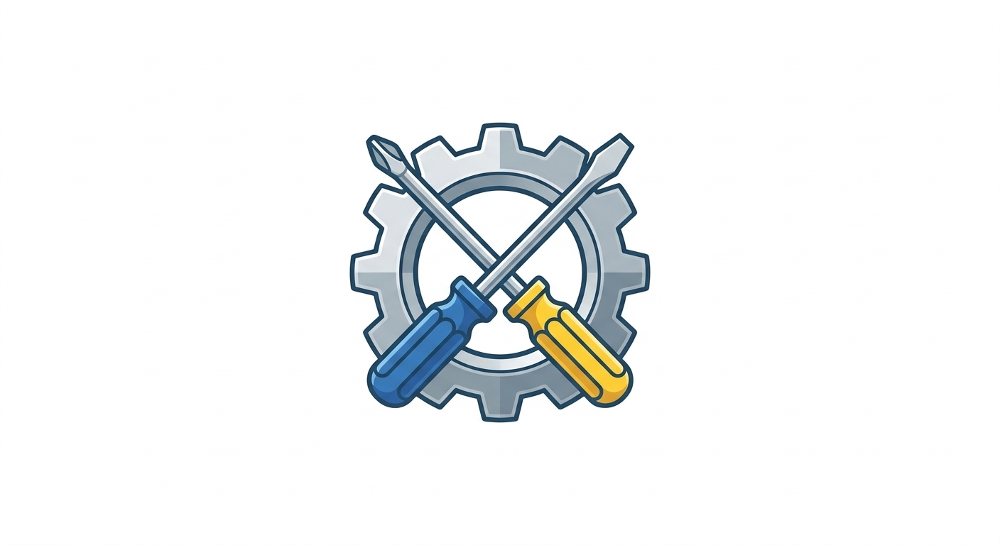

Hola Soy Mario
Lic. Informática Administrativa
Soy un apasionado de la tecnologia con una visión estrategica. Más que escribir código, creo soluciones para que las empresas sean más rentables y seguras. Me especializo en la Gestión de Proyectos TI, Seguridad de la Información y Análisis de Datos.
Contáctame 👆Experiencia Laboral
Prestador de Servicio Social | Área Jurídica
Durante aproximadamente seis meses, realicé mi servicio social en el INPI de Tancanhuitz, S.L.P., integrándomeal área jurídica. En este periodo, mi trabajo consistío principalmente en mantener el orden y la organización de los expedientes para facilitar el manejo de información.
También apoyé de forma constante en tareas administrativas diarias, como la edición y gestión de archivos PDF y el fotocopiado de documentos oficiales. Ádemas, pude aplicar mis conocimientos técnicos mediante la creación de bases de datos en Excel lo que permitio llevar un control mucho más estructurado.
- MICROSOFT EXCEL
- PDF24
Habilidades
Habilidades Técnicas
Habilidades Blandas
Estudios
Universidad Intercultural de San Luis Potosí Campus Tancanhuitz
Actualmente, me encuentro cursando la Licenciatura de Informática Administrativa en la Universidad Intercultural de San Luis Potosí, Campus Tancanhuuitz.Estoy en la etapa final de mi carrera, donde he logrado integrar mis conocimientos técnicos con la gestión administrativa.
Esta formación me ha permitido desarrollar una visión más completa sobre cómo la tecnología puede optimizar procesos en negocios y organizaciones, preparándome para los retos del mundo profesional.
- PROGRAMACIÓN
- MANTENIENTO
- DESARROLLO DE SITIOS WEB
Trigrillos - Cobach Plantel 14 de Tancanhuitz, S.L.P.
Curse mis estudios nivel medio superior en el Cobach 14 de Tancanhuitz. A partir del tercer semestre, decidi enfocarme en la capacitación de Informática, donde profundicé en conceptos técnicos más avanzados.
Fue en este trayecto donde tuve mi primer acercamiento con heramientas de diseño como Photoshop, aprendiendo los conceptos básicos de edición y creación visual, tambien aprendi los conceptos básicos de programación y desarrollo web.
- CONCEPTOS BÁSICOS DE PROGRAMACIÓN
- PHOTOSHOP
- INTRODUCCIÓN AL DESARROLLO DE SITIOS WEB
Escuela Secundaria General "Lorenzo Asterios Chavarria" de Tancanhuitz, S.L.P.
Mi interés por la tecnología comenzó en la Escuela Sencundaria Generarl "Lorenzo Asterio Chavarria". Durante esta etapa, cursé la tecnología de Ofimática.
Con esto me dio las bases fundamentales para el manejo de herramientas de oficina y la organización digital de la información, habilidades que sigo mejorando en la actualidad.
- OFIMÁTICA
Servicios
